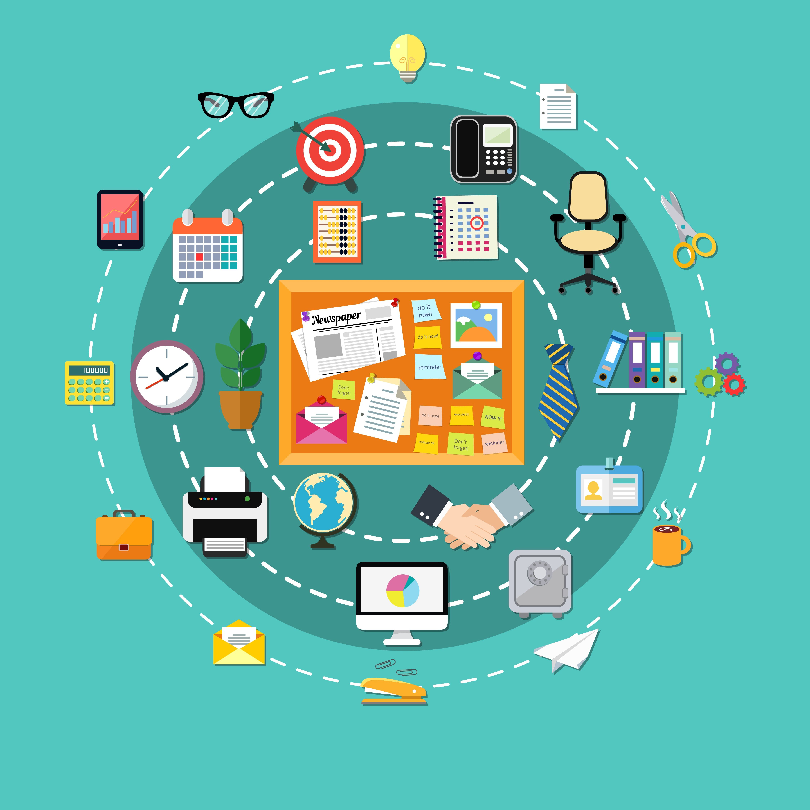

Organizarse para participar mejor
Participar activamente en el aula virtual no depende solo de saber qué hacer, sino también de cómo te organizas.
En los entornos en línea, no siempre hay un horario fijo, por lo que es importante desarrollar pequeñas estrategias que te ayuden a mantener una participación constante.
No se trata de dedicar más tiempo, sino de organizar mejor el que tienes.
Estrategias clave
Estrategias para participar activamente
Explora estas tarjetas para conocer estrategias sencillas que te ayudarán a participar con más seguridad, continuidad y autonomía en un aula virtual.
Acceder de forma regular
Entrar con frecuencia ayuda a seguir el ritmo del curso.
Acceder al aula virtual varias veces a la semana permite comprobar novedades, revisar materiales y evitar que las tareas se acumulen.
Revisar mensajes y calendario
Los avisos y fechas importantes orientan tu trabajo.
Los mensajes del profesorado, los avisos y el calendario pueden incluir cambios, recordatorios, fechas de entrega o instrucciones importantes.
Planificar momentos de estudio
Reservar tiempo evita trabajar siempre con prisas.
Planificar pequeños momentos de estudio durante la semana facilita leer contenidos, participar en actividades y preparar entregas con más calma.
Dividir tareas en pasos pequeños
Separar una tarea grande en pasos hace que sea más manejable.
Puedes empezar leyendo las instrucciones, después preparar el archivo, revisarlo y finalmente entregarlo. Así reduces errores y aumentas la seguridad.
Pedir ayuda cuando sea necesario
Preguntar a tiempo evita quedarse bloqueado o bloqueada.
Si tienes una duda, puedes usar el foro, los mensajes privados o el canal indicado por el profesorado. Explica qué has intentado y qué necesitas aclarar.
¿Qué estrategias te ayudan realmente?
Comprueba tus estrategias de participación
Lee cada situación y selecciona todas las respuestas correctas. Puede haber más de una opción válida. Después, pulsa “Comprobar” para recibir feedback inmediato.
Resultado final
Completa las 5 preguntas para ver tu puntuación final.
Organiza tu participación
Imagina tu semana de estudio.
Selecciona las acciones que realizarías para organizar tu participación en el aula virtual.
Planifica tu semana en el aula virtual
Selecciona las acciones que vas a realizar y ordénalas en una secuencia lógica. Esta actividad te ayudará a organizar mejor tu participación en el curso.
Mensaje final
Cierre
Organizar tu participación en el aula virtual te permitirá aprender de forma más constante y segura.
No se trata de hacerlo todo perfecto, sino de encontrar una forma de trabajar que te ayude a avanzar paso a paso.
En el siguiente apartado aplicarás todo lo aprendido para tomar decisiones en situaciones reales del aula virtual.
